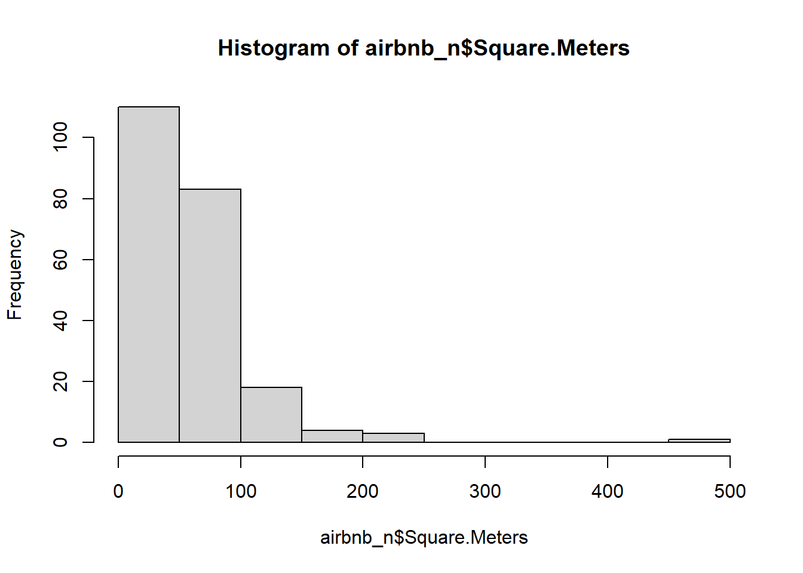
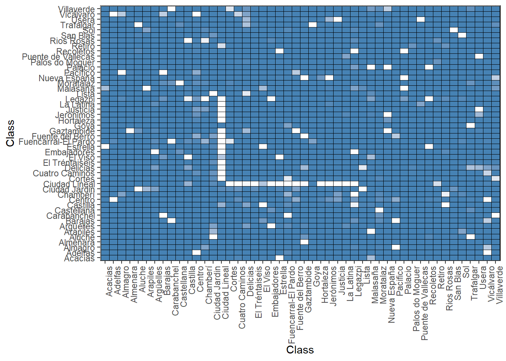
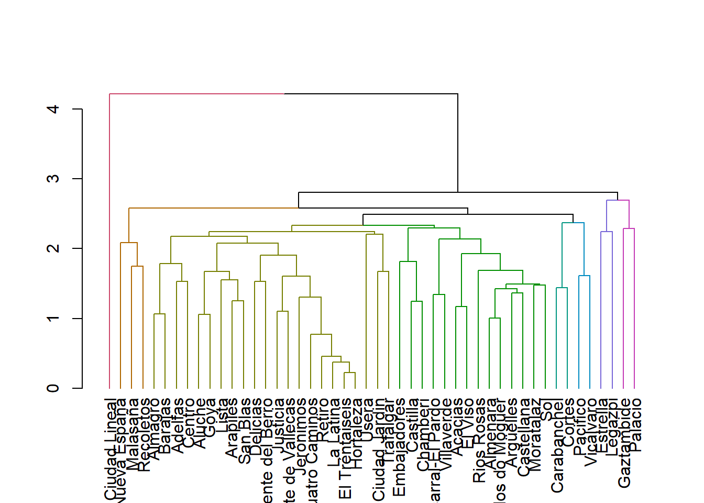
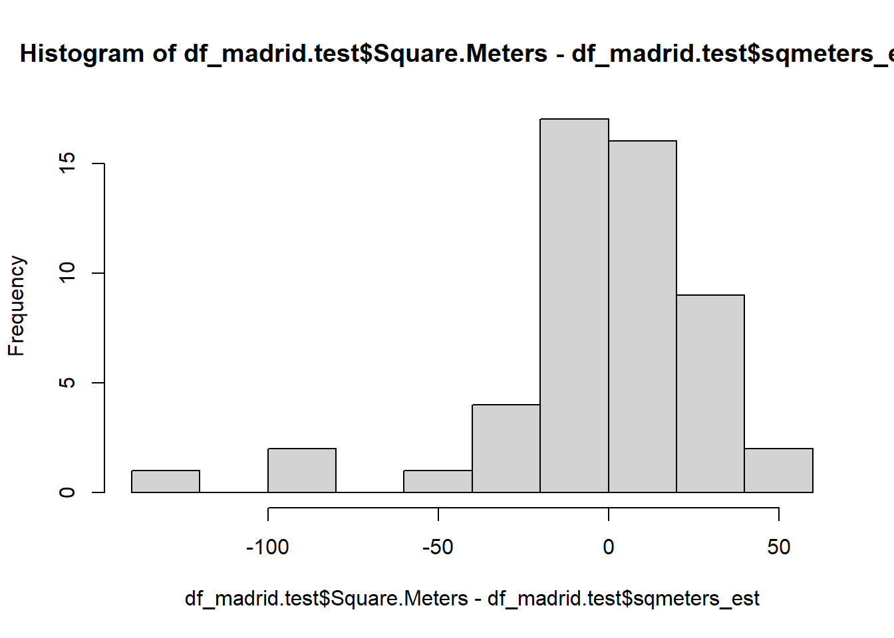
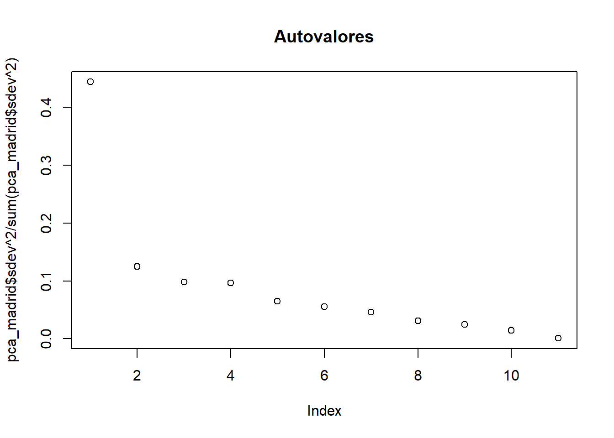

airbnb<-read.csv('C:/Users/Victor/Desktop/Práctica data-mining/airbnb-listings.csv',sep = ';')
options(repr.plot.height=4,repr.plot.width=6,repr.plot.res = 300)Vasmos a cargar el dataset de AirBnB descargado de aquí

- Vamos a quedarnos con las columnas de mayor interés: ‘City’,‘Room.Type’,‘Neighbourhood’,‘Accommodates’,‘Bathrooms’,‘Bedrooms’,‘Beds’,‘Price’,‘Square.Feet’,‘Guests.Included’,‘Extra.People’,‘Review.Scores.Rating’,‘Latitude’, ‘Longitude’ Nos quedarmos solo con las entradas de Madrid para Room.Type==“Entire home/apt” y cuyo barrio (Neighbourhood) no está vacio ’’ Podemos eliminar las siguientes columnas que ya no son necesarias: “Room.Type”,‘City’ Llama a nuevo dataframe df_madrid.
airbnb_n <- airbnb[,c('City','Room.Type','Neighbourhood','Accommodates','Bathrooms','Bedrooms','Beds','Price','Square.Feet','Guests.Included','Extra.People','Review.Scores.Rating','Latitude', 'Longitude')]
airbnb_n <- airbnb_n[which(airbnb_n$City == "Madrid" & airbnb_n$Room.Type == "Entire home/apt" & airbnb_n$Neighbourhood != ""),]
airbnb_n$Room.Type <- NULL
airbnb_n$Room.City <- NULL- Crea una nueva columna llamada Square.Meters a partir de Square.Feet. Recuerda que un pie cuadrado son 0.092903 metros cuadrados.
airbnb_n["Square.Meters"] <- airbnb_n$Square.Feet * 0.092903- ¿Que porcentaje de los apartamentos no muestran los metros cuadrados? Es decir, ¿cuantos tienen NA en Square.Meters?
paste("El total de apartamentos con NA en la columna SquareMeters es de", sum(is.na(airbnb_n$Square.Meters)), "sobre un total de", nrow(airbnb_n), "registros, lo que supone un porcentaje de NA's del", (sum(is.na(airbnb_n$Square.Meters))/nrow(airbnb_n))*100, "% en la columna SquareMeters")[1] "El total de apartamentos con NA en la columna SquareMeters es de 5254 sobre un total de 5601 registros, lo que supone un porcentaje de NA's del 93.8046777361185 % en la columna SquareMeters"- De todos los apartamentos que tienen un valor de metros cuadrados diferente de NA ¿Que porcentaje de los apartamentos tienen 0 metros cuadrados?
metros_0 <- length(airbnb_n[which(airbnb_n$Square.Meters==0),])
sum_no_na <- nrow(airbnb_n) - sum(is.na(airbnb_n$Square.Meters))
paste("El total de apartamentos con valor 0 en la columna SquareMeters es de", metros_0, "sobre un total de", sum_no_na, "registros con un valor disinto de NA, lo que supone un porcentaje de 0's del", (metros_0/sum_no_na)*100, "% sobre el total de registros distintos de NA en la columna SquareMeters")[1] "El total de apartamentos con valor 0 en la columna SquareMeters es de 14 sobre un total de 347 registros con un valor disinto de NA, lo que supone un porcentaje de 0's del 4.03458213256484 % sobre el total de registros distintos de NA en la columna SquareMeters"- Reemplazar todos los 0m^2 por NA
airbnb_n$Square.Meters[which(airbnb_n$Square.Meters == 0)] <- NAHay muchos NAs, vamos a intentar crear un modelo que nos prediga cuantos son los metros cuadrados en función del resto de variables para tratar de rellenar esos NA. Pero antes de crear el modelo vamos a hacer: * pintar el histograma de los metros cuadrados y ver si tenemos que filtrar algún elemento más. * crear una variable sintética nueva basada en la similitud entre barrios que usaremos en nuestro modelo.
- Pinta el histograma de los metros cuadrados y ver si tenemos que filtrar algún elemento más
hist(airbnb_n$Square.Meters)
- Asigna el valor NA a la columna Square.Meters de los apartamentos que tengan menos de 20 m^2
airbnb_n$Square.Meters[which(airbnb_n$Square.Meters < 20)] <- NA- Existen varios Barrios que todas sus entradas de Square.Meters son NA, vamos a eliminar del dataset todos los pisos que pertenecen a estos barrios.
airbnb_n$is_na_square <- is.na(airbnb_n$Square.Feet)
airbnb_n$is_na_square[which(airbnb_n$is_na_square == TRUE)] <- 1
registros_barrio <- aggregate(airbnb_n$Neighbourhood, by = list(airbnb_n$Neighbourhood), length)
squaremeters_na_barrio <- aggregate(airbnb_n$is_na_square, list(airbnb_n$Neighbourhood), sum)
colnames(registros_barrio) <- c("Barrio", "Registros")
colnames(squaremeters_na_barrio) <- c("Barrio", "na_Metros_Cuadrados")
comparativa_registros_metros2 <- merge(registros_barrio,squaremeters_na_barrio)
todos_metros2na <- comparativa_registros_metros2[which(comparativa_registros_metros2$Registros == comparativa_registros_metros2$na_Metros_Cuadrados),]
barrios_delete <- todos_metros2na$Barrio
barrios_delete [1] "Arganzuela" "Atocha" "Bellas Vistas"
[4] "Berruguete" "Castillejos" "Fuencarral-el Pardo"
[7] "Guindalera" "Hispanoamérica" "Ibiza"
[10] "Imperial" "La Chopera" "Moncloa"
[13] "Prosperidad" "Tetuán" "Valdeacederas"
[16] "Vallehermosa" "Villa de Vallecas" for (barrio in barrios_delete) {
airbnb_n <- airbnb_n[airbnb_n$Neighbourhood != barrio, ]
}
df_madrid <- airbnb_nEl barrio parece ser un indicador importante para los metros cuadrados de un apartamento.
Vamos a agrupar los barrios por metros cuadrados. Podemos usar una matriz de similaridad de Tukey tal y como hicimos en el curso de estadística:
tky<-TukeyHSD(aov( formula=Square.Meters~Neighbourhood, data=df_madrid ))
tky.result<-data.frame(tky$Neighbourhood)
cn <-sort(unique(df_madrid$Neighbourhood))
resm <- matrix(NA, length(cn),length(cn))
rownames(resm) <- cn
colnames(resm) <- cn
resm[lower.tri(resm) ] <- round(tky.result$p.adj,4)Warning in resm[lower.tri(resm)] <- round(tky.result$p.adj, 4): número de items
para para sustituir no es un múltiplo de la longitud del reemplazoresm[upper.tri(resm) ] <- t(resm)[upper.tri(resm)]
diag(resm) <- 1
library(ggplot2)
library(reshape2)
dfResm <- melt(resm)
ggplot(dfResm, aes(x=Var1, y=Var2, fill=value))+
geom_tile(colour = "black")+
scale_fill_gradient(low = "white",high = "steelblue")+
ylab("Class")+xlab("Class")+theme_bw()+
theme(axis.text.x = element_text(angle = 90, hjust = 1),legend.position="none")
- Usando como variable de distancia: 1-resm Dibuja un dendrograma de los diferentes barrios.
library(dendextend)
---------------------
Welcome to dendextend version 1.17.1
Type citation('dendextend') for how to cite the package.
Type browseVignettes(package = 'dendextend') for the package vignette.
The github page is: https://github.com/talgalili/dendextend/
Suggestions and bug-reports can be submitted at: https://github.com/talgalili/dendextend/issues
You may ask questions at stackoverflow, use the r and dendextend tags:
https://stackoverflow.com/questions/tagged/dendextend
To suppress this message use: suppressPackageStartupMessages(library(dendextend))
---------------------
Attaching package: 'dendextend'The following object is masked from 'package:stats':
cutreed <- dist(as.dist(1-resm),method = "euclidean")
hc <- hclust(d,method="complete")
hcd <- as.dendrogram(hc)
#plot(hcd)
#plot(color_branches(hcd, h=2.7))
plot(color_branches(hcd, h=2.3))
- ¿Que punto de corte sería el aconsejable?, ¿cuantos clusters aparecen?
Por simplicidad, el corte podría fijarse en 2.7 resultando 3 clústers, uno de ellos de gran tamaño que agruparía a la mayoría de los barrios.
Si no queremos un clúster tan grande, podríamos fijar el corte en 2.3, resultando 8 clústers.
- Vamos a crear una nueva columna en el dataframe df_madrid con un nuevo identificador marcado por los clusters obtenidos. Esta columna la llamaremos neighb_id
clusters_barrios <- data.frame(cutree(hcd, h=2.3))
clusters_barrios$Barrio <- rownames(clusters_barrios)
colnames(clusters_barrios) <- c("neighb_id", "Neighbourhood")
df_madrid <- merge(df_madrid, clusters_barrios)- Vamos a crear dos grupos, uno test y otro train.
set.seed(1235)
idx<-sample(1:nrow(df_madrid),nrow(df_madrid)*0.7)
df_madrid.train<-df_madrid[idx,]
df_madrid.test <-df_madrid[-idx,]- Tratamos de predecir los metros cuadrados en función del resto de columnas del dataframe.
df_madrid.train$City <- NULL
df_madrid.train$is_na_square <- NULL
model_dfmadrid<-lm(Square.Meters~Accommodates+Bathrooms+Bedrooms+Price+Guests.Included+Extra.People+Review.Scores.Rating,data=df_madrid.train)
summary(model_dfmadrid)
Call:
lm(formula = Square.Meters ~ Accommodates + Bathrooms + Bedrooms +
Price + Guests.Included + Extra.People + Review.Scores.Rating,
data = df_madrid.train)
Residuals:
Min 1Q Median 3Q Max
-64.274 -12.521 -1.425 10.915 108.607
Coefficients:
Estimate Std. Error t value Pr(>|t|)
(Intercept) -123.35290 33.30568 -3.704 0.000341 ***
Accommodates 9.67237 2.22080 4.355 3.1e-05 ***
Bathrooms 36.87011 5.27292 6.992 2.6e-10 ***
Bedrooms 4.80636 3.99000 1.205 0.231065
Price 0.12486 0.03952 3.159 0.002065 **
Guests.Included -6.94939 2.24760 -3.092 0.002547 **
Extra.People 0.53203 0.30298 1.756 0.082006 .
Review.Scores.Rating 1.03189 0.35378 2.917 0.004325 **
---
Signif. codes: 0 '***' 0.001 '**' 0.01 '*' 0.05 '.' 0.1 ' ' 1
Residual standard error: 24.21 on 105 degrees of freedom
(3523 observations deleted due to missingness)
Multiple R-squared: 0.7938, Adjusted R-squared: 0.7801
F-statistic: 57.75 on 7 and 105 DF, p-value: < 2.2e-16df_madrid.test$sqmeters_est<-predict(model_dfmadrid,df_madrid.test)
caret::postResample(pred=df_madrid.test$sqmeters_est,obs=df_madrid.test$Square.Meters) RMSE Rsquared MAE
NA 0.5192362 NA - Mirad el histograma de los residuos sobre el conjunto de test para evaluar la calidad de vuestro modelo
hist(df_madrid.test$Square.Meters-df_madrid.test$sqmeters_est)
Una calidad justita, los errores son considerables, la mayoría en la horquilla -(20) - (+40).
- Si tuvieramos un anuncio de un apartamento para 6 personas (Accommodates), con 1 baño, con un precio de 80€/noche y 3 habitaciones en el barrio de Sol, con 3 camas y un review de 80. ¿Cuantos metros cuadrados tendría? Si tu modelo necesita algúna variable adicional puedes inventartela dentro del rango de valores del dataset. ¿Como varía sus metros cuadrados con cada habitación adicional?
Mi modelo no usa los barrios en la regresión lineal por lo comentado en el chat de Discord: hay barrios que no ve en el training pero sí en el testing y en esos casos no sabe qué coeficientes aplicar.
A continuación calculo un nuevo modelo con las variables que figuran en el enunciado.
model_dfmadrid15<-lm(Square.Meters~Accommodates+Bathrooms+Bedrooms+Price+Beds+Review.Scores.Rating+Neighbourhood,data=df_madrid.train)
summary(model_dfmadrid15)
Call:
lm(formula = Square.Meters ~ Accommodates + Bathrooms + Bedrooms +
Price + Beds + Review.Scores.Rating + Neighbourhood, data = df_madrid.train)
Residuals:
Min 1Q Median 3Q Max
-77.529 -7.916 0.000 7.814 77.529
Coefficients:
Estimate Std. Error t value Pr(>|t|)
(Intercept) -162.41564 44.55133 -3.646 0.000483 ***
Accommodates 4.54784 2.76819 1.643 0.104482
Bathrooms 29.95364 7.63887 3.921 0.000190 ***
Bedrooms 8.70447 5.54459 1.570 0.120538
Price 0.06832 0.04459 1.532 0.129535
Beds 4.47667 3.19237 1.402 0.164844
Review.Scores.Rating 1.85676 0.44584 4.165 8.07e-05 ***
NeighbourhoodAdelfas -62.74930 30.70939 -2.043 0.044441 *
NeighbourhoodAlmagro -29.35115 29.58232 -0.992 0.324215
NeighbourhoodAlmenara 11.70960 21.40426 0.547 0.585914
NeighbourhoodArapiles -51.05233 29.73880 -1.717 0.090056 .
NeighbourhoodCarabanchel -9.04009 24.53660 -0.368 0.713562
NeighbourhoodCastilla -31.89325 24.72818 -1.290 0.200997
NeighbourhoodCentro -29.99442 29.93634 -1.002 0.319511
NeighbourhoodCiudad Jardin -7.19209 29.90604 -0.240 0.810590
NeighbourhoodCiudad Lineal -31.88654 30.71246 -1.038 0.302413
NeighbourhoodCortes -35.13612 20.88448 -1.682 0.096542 .
NeighbourhoodCuatro Caminos -56.47848 24.96049 -2.263 0.026472 *
NeighbourhoodEl Viso -19.61702 29.74064 -0.660 0.511477
NeighbourhoodEmbajadores -31.03716 18.53481 -1.675 0.098083 .
NeighbourhoodGoya -42.95051 30.14061 -1.425 0.158197
NeighbourhoodJerónimos 33.76431 28.73492 1.175 0.243605
NeighbourhoodJusticia -35.00915 19.96910 -1.753 0.083553 .
NeighbourhoodLa Latina -37.91140 18.54065 -2.045 0.044295 *
NeighbourhoodLista -69.54611 26.42173 -2.632 0.010247 *
NeighbourhoodMalasaña -30.11616 18.39580 -1.637 0.105686
NeighbourhoodMoratalaz -46.16378 31.33402 -1.473 0.144752
NeighbourhoodPacifico -19.39724 29.99425 -0.647 0.519750
NeighbourhoodPalacio -30.45237 22.53147 -1.352 0.180477
NeighbourhoodPalos do Moguer -23.22770 30.18996 -0.769 0.444019
NeighbourhoodRecoletos -30.15289 24.70161 -1.221 0.225930
NeighbourhoodRetiro -48.33838 30.67949 -1.576 0.119220
NeighbourhoodRios Rosas -0.81450 37.86867 -0.022 0.982896
NeighbourhoodSan Blas -19.72887 24.71559 -0.798 0.427189
NeighbourhoodSol -18.42229 18.16089 -1.014 0.313572
NeighbourhoodTrafalgar -31.00749 22.65080 -1.369 0.175000
---
Signif. codes: 0 '***' 0.001 '**' 0.01 '*' 0.05 '.' 0.1 ' ' 1
Residual standard error: 24.06 on 77 degrees of freedom
(3523 observations deleted due to missingness)
Multiple R-squared: 0.8506, Adjusted R-squared: 0.7827
F-statistic: 12.53 on 35 and 77 DF, p-value: < 2.2e-16metros_cuadrados_enunciado <- -162.41 + (6 * 4.54) + (1 * 29.95) + (80 * 0.068) + (3 * 8.70) + (1 * (-18.42)) + (3 * 4.47) + (80 * 1.85)
paste("El apartamento tendrá un tamaño predicho de", metros_cuadrados_enunciado, "metros cuadrados")[1] "El apartamento tendrá un tamaño predicho de 69.31 metros cuadrados"- Rellenar los Square.Meters con valor NA con el estimado con el modelo anterior.
df_madrid$Square.Meters[which(is.na(df_madrid$Square.Meters))] <- predict(model_dfmadrid,df_madrid[which(is.na(df_madrid$Square.Meters)),])Usar PCA para encontrar el apartamento más cercano a uno dado. Este algoritmo nos ayudaría a dado un apartamento que el algoritmo nos devolvería los 5 apartamentos más similares.
Crearemos una función tal que le pasemos un apartamento con los siguientes datos: * Accommodates * Bathrooms * Bedrooms * Beds * Price * Guests.Included * Extra.People * Review.Scores.Rating * Latitude * Longitude * Square.Meters y nos devuelva los 5 más similares de:
df_madrid_pca <- df_madrid[, c("Accommodates", "Bathrooms", "Bedrooms", "Beds", "Price", "Guests.Included", "Extra.People", "Review.Scores.Rating", "Latitude", "Longitude", "Square.Meters")]
df_madrid_pca <- df_madrid_pca[complete.cases(df_madrid_pca),]
pca_madrid<-prcomp(df_madrid_pca, center = TRUE, scale = TRUE)
plot(pca_madrid$sdev^2/sum(pca_madrid$sdev^2),main="Autovalores")
paste("Nos quedamos con los primeros 4 componentes principales, que explicarían en torno al 80% de la varianza")[1] "Nos quedamos con los primeros 4 componentes principales, que explicarían en torno al 80% de la varianza"number_of_pca_components <- 4
knn <- 5
new_vector <- df_madrid_pca[1,]
out<-predict(pca_madrid, newdata = new_vector)
out<-matrix(out,nrow=1)
dist<-rowSums((out[rep(1, times = nrow(df_madrid_pca)), ]-df_madrid_pca)^2)
knn_tags<-rownames(df_madrid_pca)[order(dist,decreasing = F) %in% c(1:knn)]
knn_tags[1] "651" "2052" "2166" "2184" "2368"